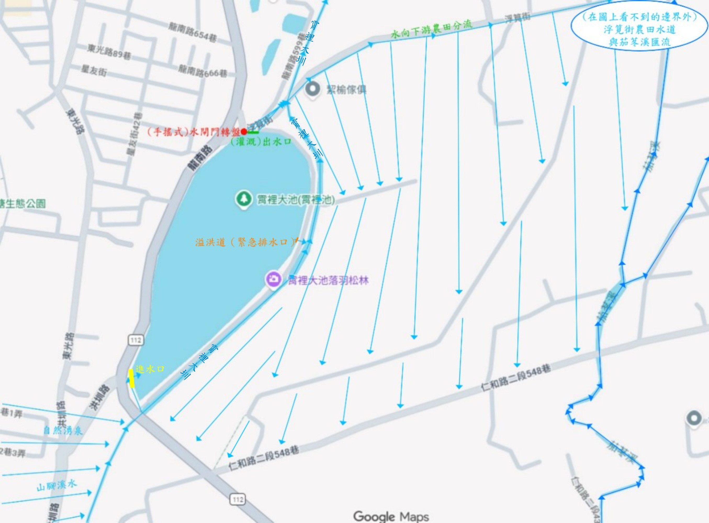
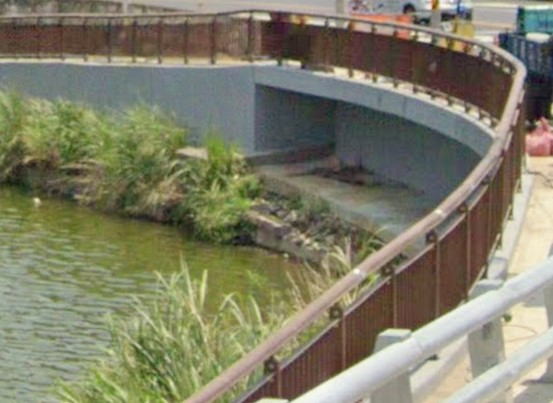
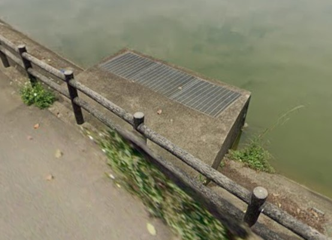
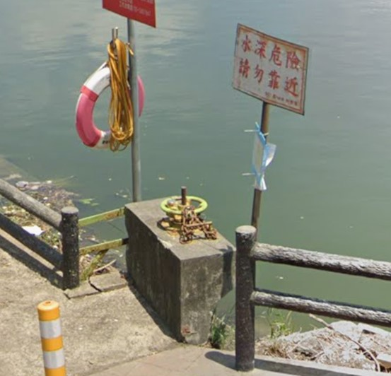

地圖、地景與水利系統
地理位置與導覽地圖
本專題田野調查之核心地理坐標與地圖標記，可透過下方地圖進行互動操作，亦可點擊連結開啟官方網址：
圖：霄裡大池位置互動地圖（可直接在畫面上放大縮小與拖曳）
給水系統：石門大圳與天然湧泉的雙重脈絡
霄裡大池的給水網路極具特色，在現代桃園水利系統架隔中，它隸屬於石門大圳給水區的幹線系統，主要負責承接與調節石門大圳霄裡導水路引入的人工水源。除了仰賴大圳渠道系統的規律化補給外，霄裡大池更得天獨厚地坐落於地下水層豐富的「天然湧泉帶」上。這群源源不絕的地下清泉，使得大池即便在冬季或大圳非供水的枯水期，依然能夠常年保持清澈且穩定的極高蓄水量，是桃園「千塘之鄉」中極少數兼具人工大圳引水與天然地下湧泉雙重補給的模範指標埤塘。
關鍵構造：進水口、出水口與溢洪道
透過現地水利設施的精準盤點，霄裡大池維持日常蓄水與防汛安全依賴三大核心幾何水利構造：
- 進水口： 位於池塘南側至西南側（鄰近洪圳路與龍南路交叉口的高地），此處匯聚了自然湧泉與山腳溪水，也設有銜接石門大圳導水路（霄裡大圳）的水泥箱涵（或橋墩引道），其為埋在馬路底下的方形大水管，負責讓水流安全地從馬路下方鑽過去，流入池塘。
- （灌溉）出水口： 位於池塘正北側（靠近浮覓街）的地勢低窪處，設有作為霄裡大圳灌溉系統源頭的（手搖式）水閘門轉盤，透過手動旋轉綠色轉盤，其下方連接著一根垂直的金屬螺桿，會把水底下的鐵製閘門板往上拉開，將大池池水導引至下游八德、中壢一帶的農田渠道。
- 溢洪道（緊急排水口）： 位於池塘的正東側（排水道連結霄裡大池與霄裡大圳），當極端暴雨或颱風導致池內水位迅速飆升，到達能淹過溢流孔的高度時，多餘的池水會透過流入孔間來排入鄰邊霄裡大圳的水道中，從而達到保護大池堤防的作用，不讓湖水溢出來淹到馬路上，是極佳的自動化防災設施。

霄裡大池附近水道及水流方向位置（Google地圖電繪）

進水口水泥箱涵（或橋墩引道）的頂蓋（圖片來源於Google街景服務截圖）

（手搖式）水閘門轉盤（圖片來源於Google街景服務截圖）

溢洪道（緊急排水口）（圖片來源於Google街景服務截圖）